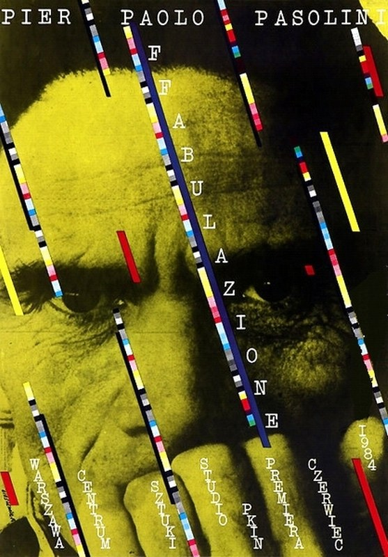
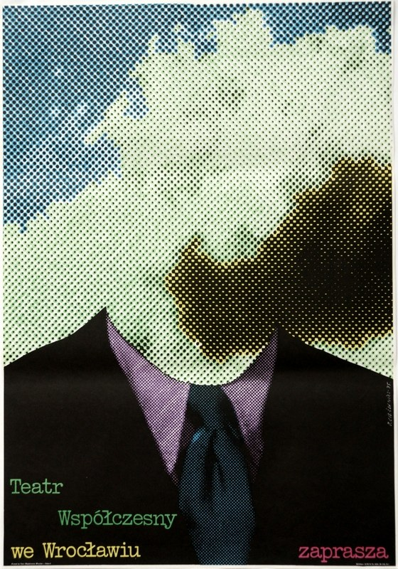
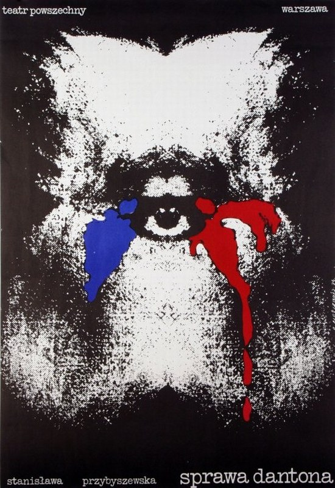
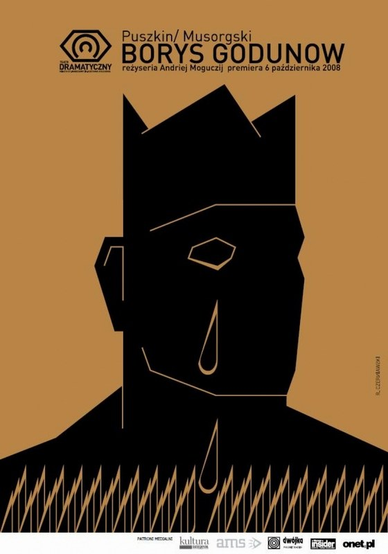
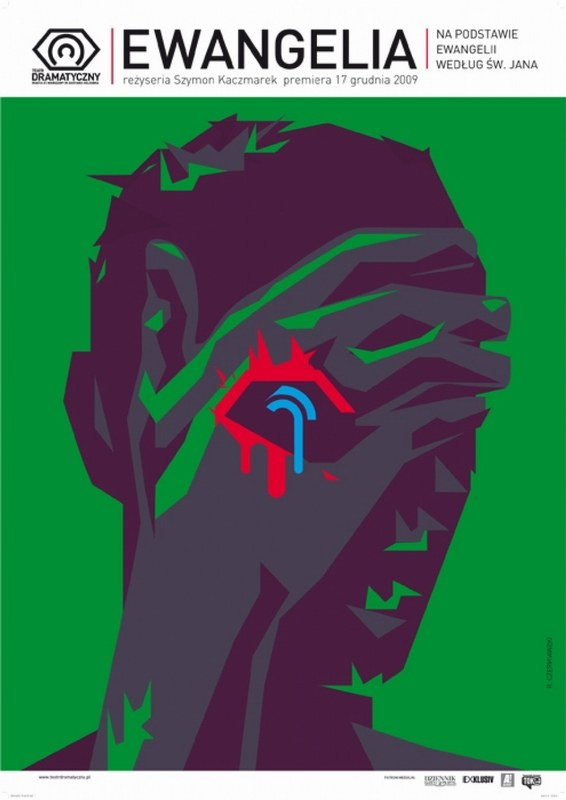
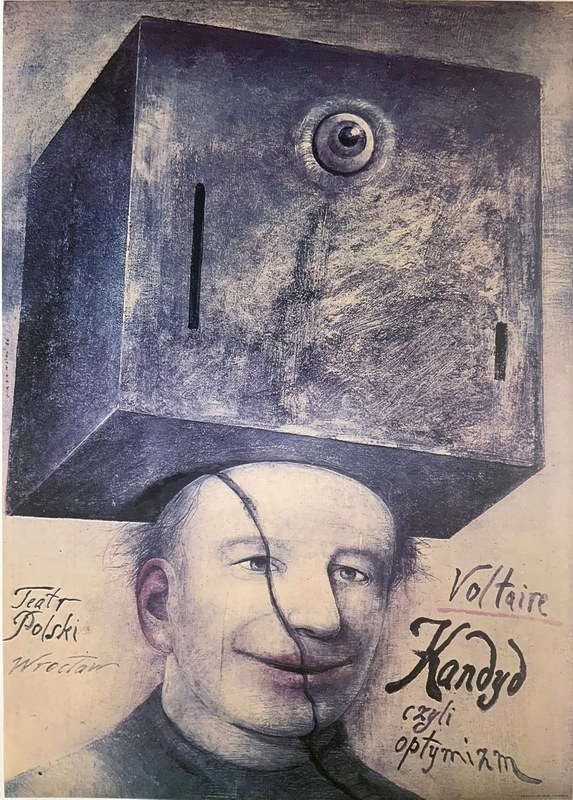
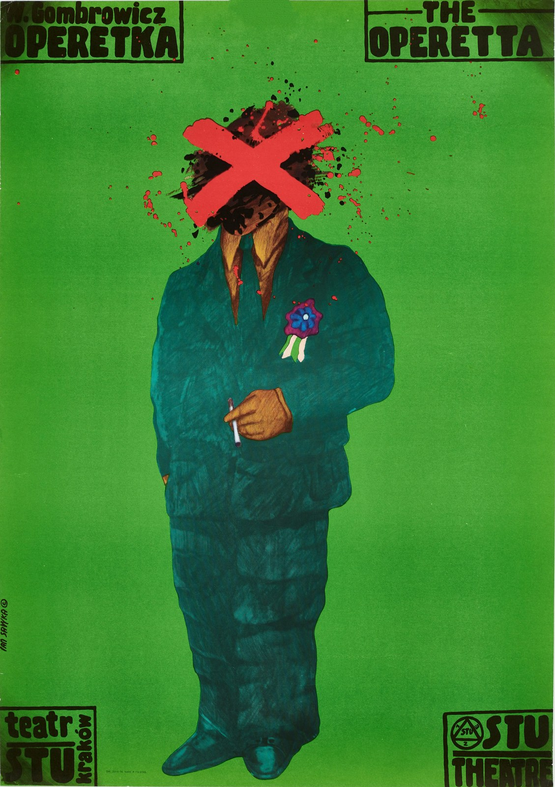

CRVI000264Enchantment of story-telling – Roman Cieślewicz - Affabulazione
Theatre Poster · 1984 · 1984
Theatre Poster · 1984 · 1984

CRVI000265Roman Cieślewicz - Theater Wspolczesny in Wroclaw Invites
Theatre Poster · 1975 · 1975
Theatre Poster · 1975 · 1975

CRVI000266Roman Cieślewicz - J.M.K. Hellcat
Theatre Poster · 1979 · 1979
Theatre Poster · 1979 · 1979

CRVI000267Roman Cieślewicz - The Danton Case
Theatre Poster · 1975 · 1975
Theatre Poster · 1975 · 1975

CRVI000268Robert Czerniawski - Boris Godunov
Theatre Poster · 2008 · 2008
Theatre Poster · 2008 · 2008

CRVI000270Robert Czerniawski - Gospel
Theatre Poster · 2009 · 2009
Theatre Poster · 2009 · 2009

CRVI000271Robert Czerniawski - Lulu on the Bridge
Theatre Poster · 2008 · 2008
Theatre Poster · 2008 · 2008

CRVI000279Wiktor Sadowski - Candide, or Optimism
Theatre Poster · 1986 · 1986
Theatre Poster · 1986 · 1986

CRVI000292Jan Sawka - Operetka (The Operetta)
Jan Sawka · Witold Gombrowicz, Teatr STU
Jan Sawka · Witold Gombrowicz, Teatr STU